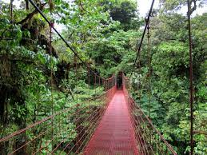
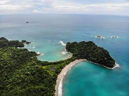

Es famosa en el ámbito internacional por ser uno de los templos de vida silvestre más sobresalientes
de los trópicos en este lado del mundo. Se extiende hacia las vertientes del Caribe y el Pacífico
costarricense, por lo que la combinación de sus condiciones climáticas y geográficas ayuda a formar
cambios considerables de temperatura y humedad en distancias relativamente cortas. Así que,
cuando visite la zona, lleve abrigo, al igual que ropa y calzado idóneos para las condiciones lluviosas.

Puente en Monteverde
Manuel Antonio
El Parque Nacional Manuel Antonio le ofrece un paraíso natural muy cerca de usted.
Imagínese estar rodeado de mapaches, perezosos de dos y tres dedos, ardillas, pequeños felinos,
nutrias, monos carablanca, además de manglares, islas y lo mejor de la flora del bosque tropical húmedo.
Pues, toda esa riqueza y belleza natural está más cerca de lo que usted se imagina, en el Parque Nacional
Manuel Antonio. Este parque forma parte del Pacífico Central de Costa Rica y está ubicado a unos 180 km al
sur de San José por carretera (vía Orotina y Jacó) y 7 km al sur de la ciudad de Quepos, en la provincia
de Puntarenas.
Durante el trayecto desde San José, el visitante puede observar varios paisajes: pueblos de la zona,
cocodrilos tomando el sol en el río Tárcoles, vistas del mar al lado de la costanera y extensas
plantaciones de palma aceitera en la llanura de Parrita.

Playa en Manuel Antonio
Jacó
Descubra Jacó, una de las playas más visitadas de Costa Rica. Con múltiples actividades turísticas por hacer.